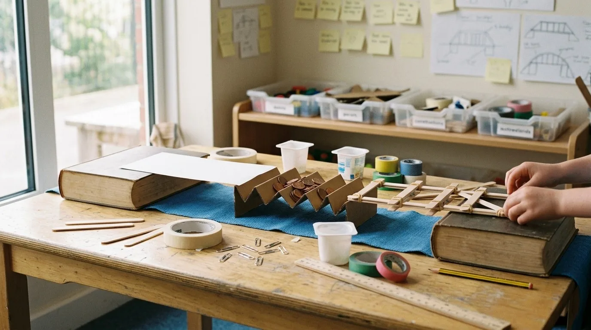

Mitjans · 1r a 3rAmbients · internivell2 sessions de 90 min
Construïm un pont que aguanti
El riu ha crescut i el ninot no pot passar a l'altra banda. Infants de primer, segon i tercer, barrejats en equips de tres, proven, fallen, miren per què i ho tornen a provar. Aquí tens l'ambient sencer: l'espai, els rols, el repte en quatre versions i un banc de proves per fer prediccions abans de tocar el paper.

Ponts de paper i pals sobre dues ribes: l'ambient a punt per provar.
Fitxa i targeta de repte
El repte és el mateix per a tothom. El que canvia és l'ajuda: tria una versió o compara-les les quatre.
Objectiu
Explorar què fa que un pont aguanti més pes: provar formes i materials senzills, predir què passarà, comprovar-ho amb les mans i explicar-ho amb paraules i amb números.
Durada
2 sessions de 90 min: dimecres, Construïm un pont que aguanti; divendres, El pont, segona prova.
Provocació
«El riu ha crescut i el ninot no pot passar a l'altra banda. Quin pont aguanta més pes?» Tortosa té l'Ebre al davant: els ponts són a tocar. Pots deixar que els infants els recordin, sense dibuixar-los de memòria.
Criteris d'avaluació (Decret 175/2022)
Coneixement del medi. Plantejar-se preguntes i fer prediccions sobre què passa quan es prova un objecte; experimentar amb materials senzills; comunicar el que s'ha descobert amb dibuixos, paraules i dades.
Matemàtiques. Comptar i comparar quantitats; mesurar longituds (els 20 cm del riu); registrar dades en una taula senzilla i interpretar-les (a tercer, també relacionar dues quantitats).
Competències transversals
Aprendre a aprendrePersonal i socialComunicativaEmprenedora
Recursos (material no estructurat)
Paper i cartolina
Pals de gelat, pinces, gomes i cinta
Gots de iogurt (per a pilars)
Monedes d'1 cèntim o volanderes, com a pes
Dos blocs com a ribes, a 20 cm
Un ninot, regle i bàscula (per a l'ampliació)
BBase
El riu ha crescut. El ninot no pot passar. Construeix un pont que aguanti més pes.
Mira les dues ribes. Estan a 20 cm.
Pensa un pont i dibuixa'l.
Tria el material i construeix-lo.
Posa'l a les ribes. Hi ha de passar el ninot.
Posa monedes sobre el pont, d'una en una.
Anota què ha passat: aguanta o cau?
Per pensar: què fa que un pont sigui més fort?
VSuport visual
Fes un pont. Que aguanti.
1Mira el riu
2Dibuixa
3Construeix
4Posa'l a les ribes
5Una moneda cada cop
6Fes una foto
Els pictogrames sempre van en aquest ordre. Pots enganxar-los a la taula.
LFLectura fàcil
Fem un pont.
El ninot és en una banda del riu.
Vol anar a l'altra banda.
Fes un pont.
El pont ha d'aguantar monedes.
Posa les monedes d'una en una.
Compta les monedes.
Si cau, mira per què.
Explica-ho al teu equip.
AAmpliació
Un pont amb poc material. Quin és el més eficient?
Només tens 10 pals i 1 m de cinta. Cap altre material.
Construeix un pont per a les ribes de 20 cm.
Pesa el pont acabat (en grams).
Posa monedes fins que caigui. Anota quantes n'aguanta.
Calcula: monedes aguantades ÷ grams del pont.
Compara amb el pont d'un altre equip i amb el vostre primer pont. Quin aprofita millor el material? Per què?
Per pensar: si tens més pes de pont, aguanta més sempre? Què canvia si el fas més lleuger?
L'espai
L'ambient té cinc racons. Toca un racó del plànol (o de la llista) i mira per a què serveix.
Plànol esquemàtic dissenyat per a aquesta mostra; la distribució real s'adapta a l'aula.
Toca un racó
Aquí veuràs per a què serveix, què hi passa i què hi ha de fer l'adult.
Internivell de debò
No és «cada nivell a la seva». Els tres cursos treballen en el mateix equip, amb el mateix repte, i cadascú aporta el que pot i es pregunta el que toca.
Equips de tres
1 infant de 1r1 infant de 2n1 infant de 3r
Es formen equips d'un de cada curs. Els rols es reparteixen sense mirar l'edat i roten: dimecres un el tria cada infant; divendres tothom en prova un de diferent. Una taula pot tenir dos equips que es miren els ponts.
Quatre rols (en un equip de tres, un rol es comparteix)
Arquitecte
Dibuixa el pla abans de tallar i el va actualitzant quan el pont canvia.
Constructor
Talla, plega, lliga i enganxa amb el material que l'equip ha triat.
Provador
Posa les monedes d'una en una a la zona de proves i les compta en veu alta.
Cronista
Fa la foto o el dibuix del que passa i ho deixa al mural de descobriments.
Què s'espera de cada nivell davant del mateix repte
1r
2n
3r
Què fa
Prova el pont i mira si aguanta o no aguanta.
Compta les monedes que aguanta i les anota.
Compara dos ponts i explica per què un aguanta més.
Com ho diu
Amb el cos, un dibuix o una paraula: «cau», «aguanta».
Amb un número i una frase: «n'aguanta 12».
Amb una frase de «perquè» i la diferència entre dos números.
Pregunta de l'adult
Què ha passat quan has posat la moneda?
Quantes n'ha aguantat? I el de l'altre equip?
Quant més aguanta? Què té de diferent?
Què deixa escrit
Una creu o un visto a la taula.
El número de monedes a la taula.
Una frase al mural: «hem descobert que…».
Els nivells no són límits: un infant de 1r que compta fins a 12 ho anota, i un de 3r pot dibuixar el pla. L'equip decideix qui fa què; l'adult vigila que ningú es quedi sempre amb el mateix.
Banc de proves: prova el pont
Tria una forma i un material, escriu què creus que passarà i afegeix monedes una a una. Al final, anota el resultat a la taula.
Això és una estimació per fer prediccions. La prova de debò és amb les mans: el vostre pont pot aguantar més o menys que aquest.
Forma
Material
Taula de resultats
Aquesta mateixa taula és la del full de registre: quan facis la prova de debò, compara el teu resultat amb la predicció.
Paper de l'adult
L'adult no explica com es fa un pont. Fa preguntes, mira i deixa que els ponts fallin.
Preguntes per acompanyar, sense donar la resposta
Abans de provarQuè creus que passarà si hi poses una moneda al mig?
Quan cauOn ha començat a doblegar-se? Què ha fallat primer?
Per millorarCom ho podries fer més fort? Què canviaries només una cosa?
Per compararQuin dels dos ponts aguanta més? Com ho saps?
Per al cronistaQuè voldries que sàpiguen els altres equips d'aquest pont?
Què observar
Fan prediccions i les diuen en veu alta?
Tornen a provar després de caure, en lloc de començar de zero?
Canvien una sola cosa cada vegada, o tot alhora?
Els tres nivells participen o un parla per tots?
Usen els números per comparar, o només «aquest és millor»?
Què no cal fer
No dir quina forma és la bona.
No arreglar el pont que ha caigut.
No repartir el material: que el vagin a buscar.
Graella d'observació per equips
Sense noms: equips 1 a 4. Toca una casella per canviar-ne l'estat: No s'hi veu → Comença → Ho fa → Ho fa i ho explica.
Dimecres · Construïm un pont que aguanti
10'Provocació: el riu i el ninot. Prediccions en veu alta.
15'Formen equips, reparteixen rols, dibuixen el pla.
35'Construeixen amb el material que triïn.
20'Proves: monedes d'una en una, anoten.
10'Cronistes pengen una descoberta al mural.
Divendres · El pont, segona prova
10'Mirem el mural. Què vam descobrir?
15'Cada equip decideix què millorarà i per què. Rols diferents.